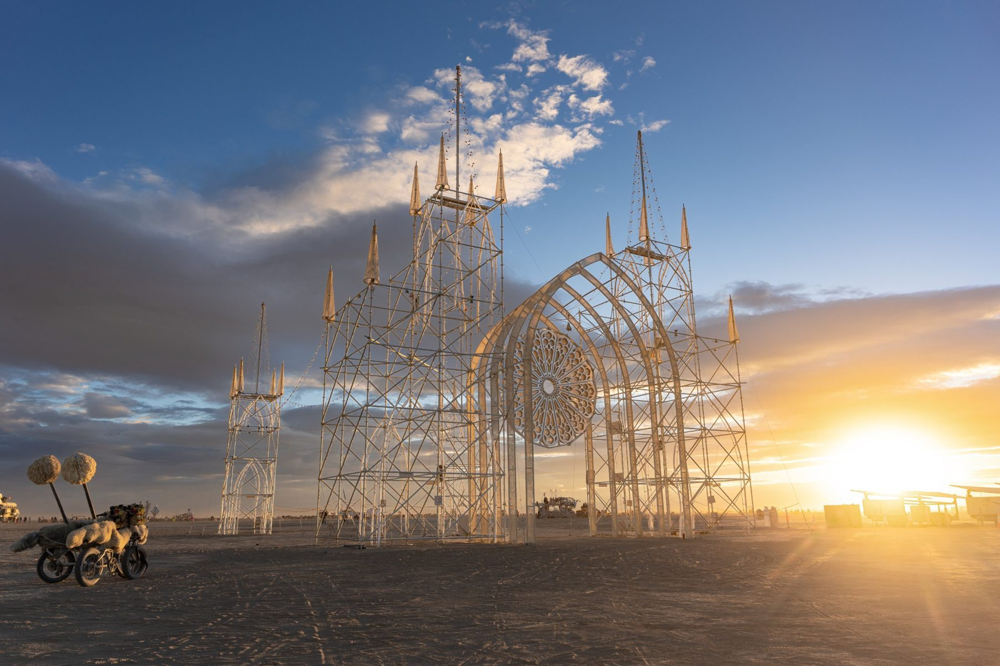

Press
In the press
Coverage of the Gothic Folly from Burning Man 2026 onward.

This 60-foot masterpiece constructed by Alex Noerpel and Hunter Keene echoed Gothic cathedrals.
FreeYork
A towering 60-foot Gothic Folly cathedral outline.
e-a-a.com
One of the large pieces on the playa this year.
Dusted, squashpractice.com
Coverage
Articles & mentions
- Nov 9, 2026Penn State Stuckeman SchoolFrom Penn State to Burning Man: Alumni debut projects at desert festivalProfiles alumni Hunter Keene and Alex Noerpel and how architecture and theatre design shaped the Folly.
- Sep 13, 2026ArchiPanicBurning Man 2026 explored the connection between different realmsArchitecture roundup that reads the Folly as part Gothic ruin, part futurist folly.
- Sep 23, 2026FreeYorkBurning Man 2026: Towering Creations and Emotional Narratives in the Nevada DesertA dedicated section on the Folly's light and spired tops.
- Sep 22, 2026e-a-a.comEphemeral Desert Architecture: Burning Man's 2026 Engineering MarvelsLists the Folly among the year's engineering highlights.
- Sep 2026DezeenThe quirky architecture of Burning Man 2026Gurpreet Chawla's photo set of ten installations from the year.
- Sep 2026SFGATEThe best photos of Burning Man 2026Photo roundup featuring the Folly.
- Oct 22, 2026GayCities13 Homo Halloween parties guaranteed to raise your spiritsPreviews the Folly at City of Gods, Industry City.
- Sep 24, 2026Duncan RawlinsonBurning Man 2026 PhotosTwo captioned frames of the Folly in a large photo set.
- 2026Burning Man GalleryThe Gothic Folly at DawnPhotograph by Mark Fromson in the official gallery.
- 2026Red PilotBurning Man 2026 portfolioIncludes a frame of the Folly credited to the artists.
- Sep 12, 2026DustedDusted: Burning Man 2026A burner's photo recap naming the Folly among the year's large works.
- Oct 2026Accuracy ThirdS10 E00 · Afterburn 2026: Synecdoche FeelingThe Burning Man oral-history podcast lists the Folly among the episode's topics.
- 2026Burning Man Project2026 Art Listings: The Gothic FollyThe official art program entry.